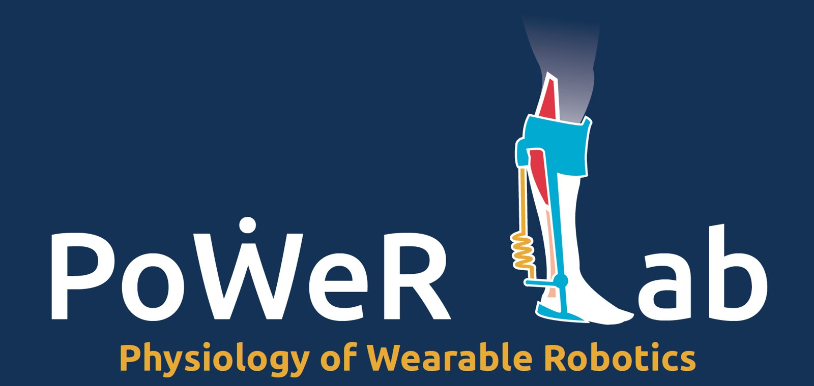
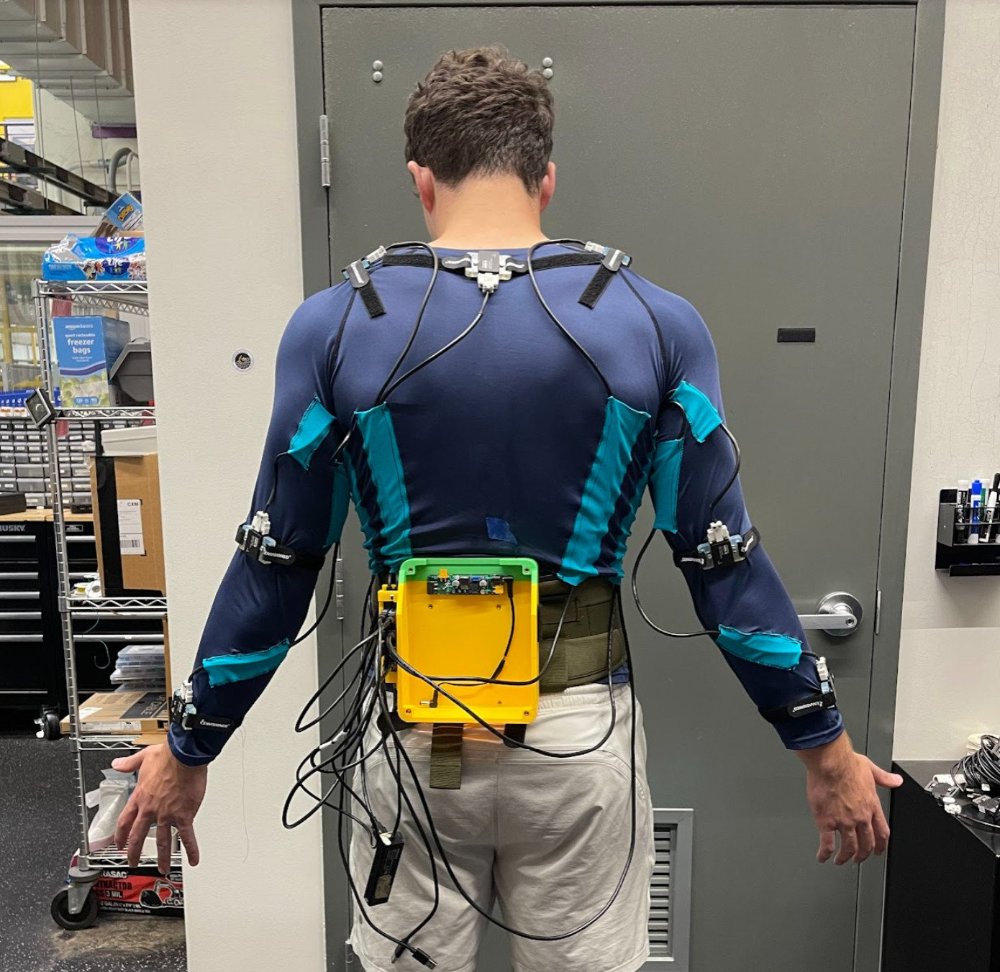
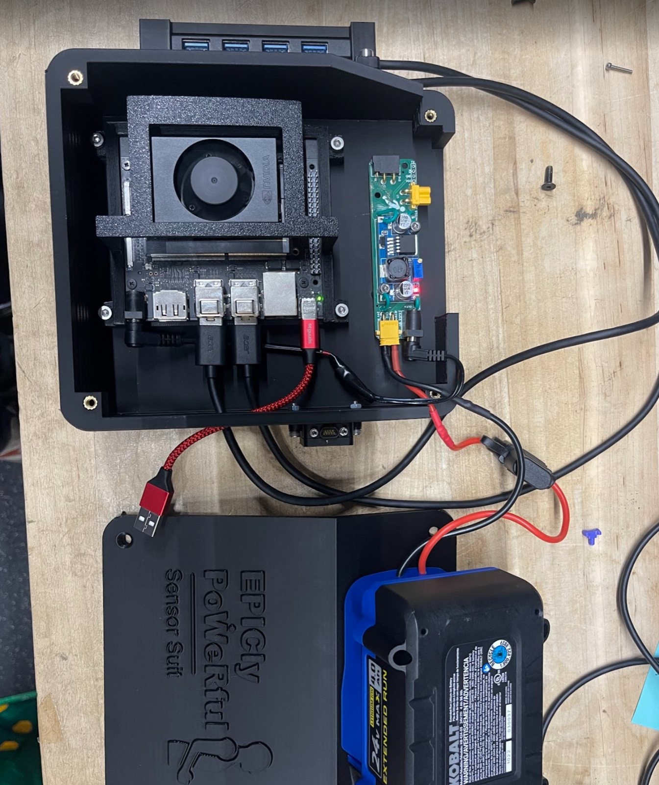
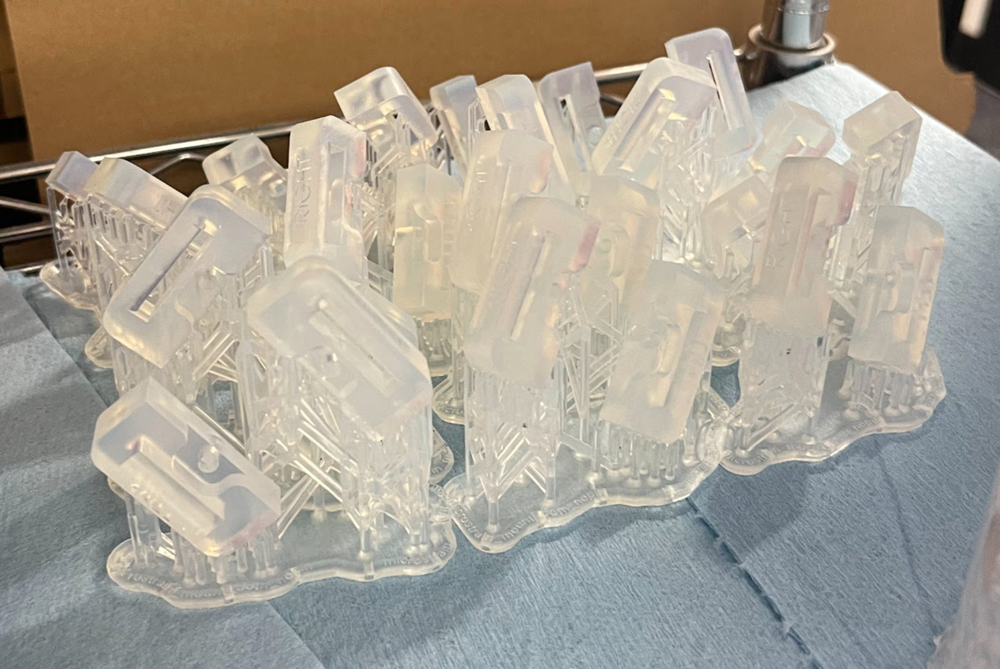

Sensor Suit for Upper Body Exoskeleton


Human in the Loop Exoskeleton Control
For an upper body exoskeleton, my project was to create a wearable sensor suit composed of:
- 9 high precision IMU sensors
- 2 pressure insoles (XSensors)
The suit is designed to adapt to any user, allow the user to perform dynamic movements, and be unobtrusive to the user and the exoskeleton.
Suit Demo
Sensor Fusion Testing

Electronics / Control
The sensor suit is designed to run live machine learning from IMU data so it needs a powerful controller, which is why a Jetson Orin Nano was selected. The suit is battery powered completely by a 24 volt battery, which can be easily hot swapped for a new one. The buck converter regulates the voltage to the Jetson. The Jetson runs on a Linux based operating system, from which we collected data using Python code.
Physical Build
Because this was a project where I had to go from ideation to a complete product, there were a ton of fabrication methods I used:
- The IMU connectors were 3D printed from an SLA process (right)
- The enclosure was 3D printed designed to securely fit all the electronics in a modular fashion
- Custom 3D printed strain relief and clamping for the IMU cables
- All the wires were custom soldered connectors for the IMUs
- All the soft goods were sewn on a sewing machine with a flexible, durable fabric
